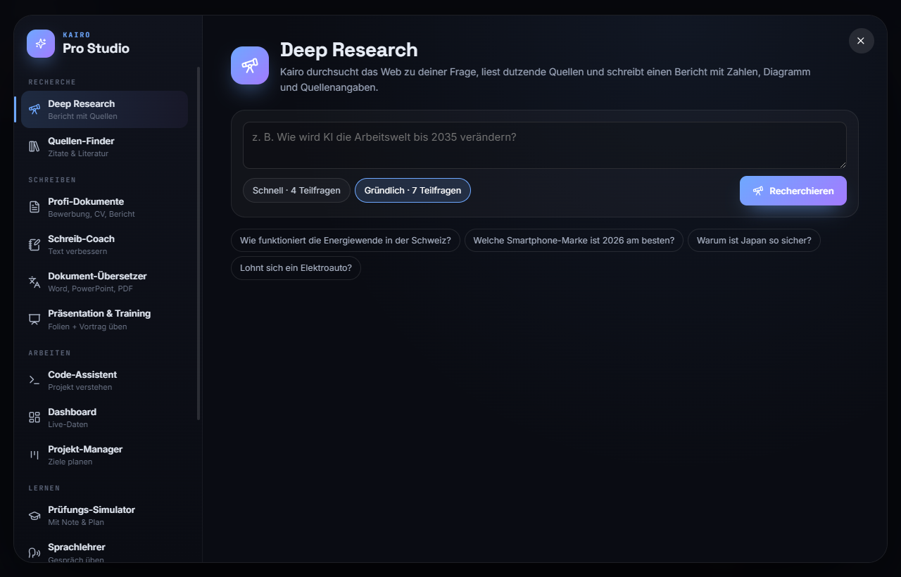
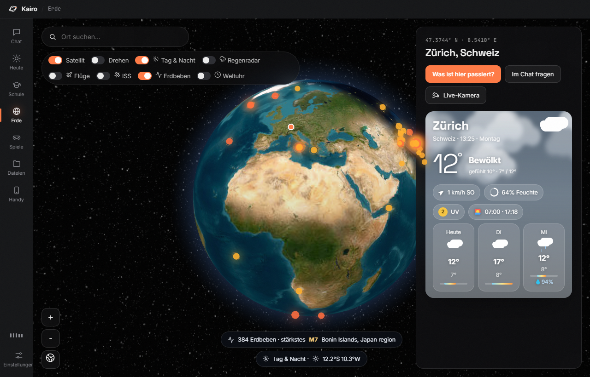
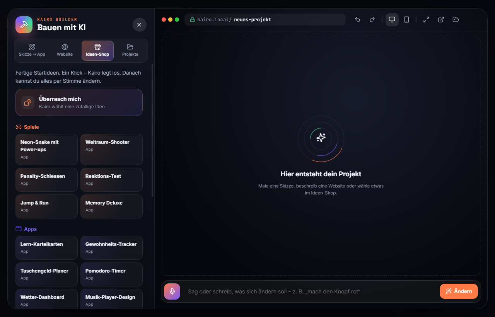
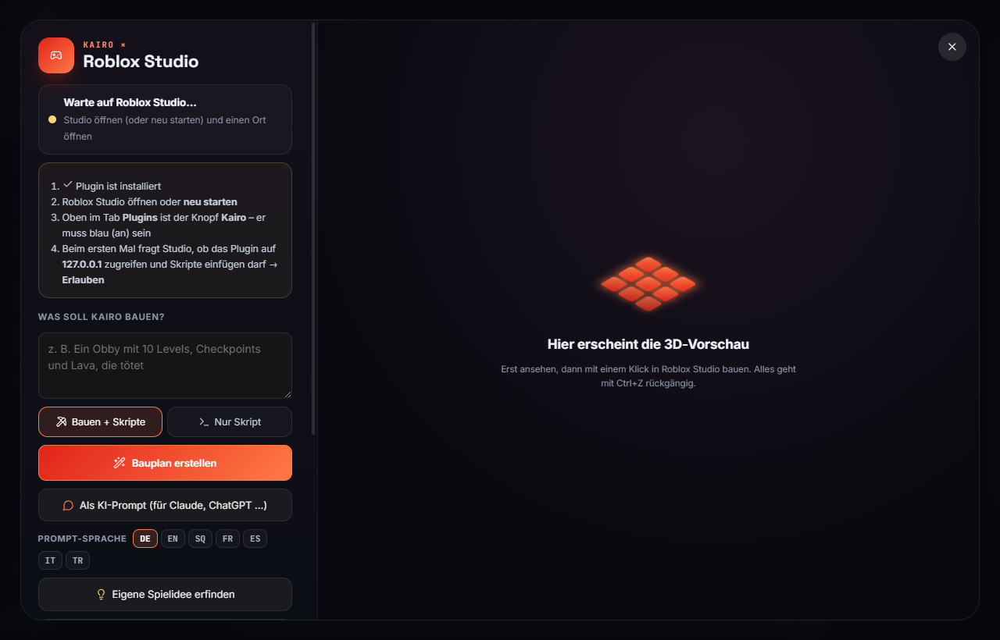
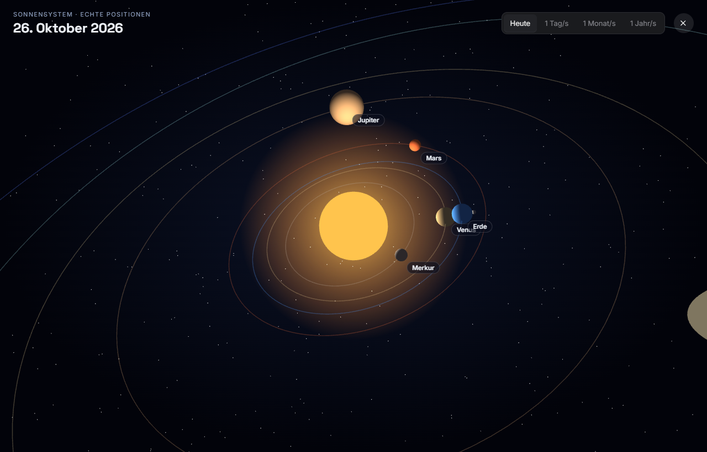
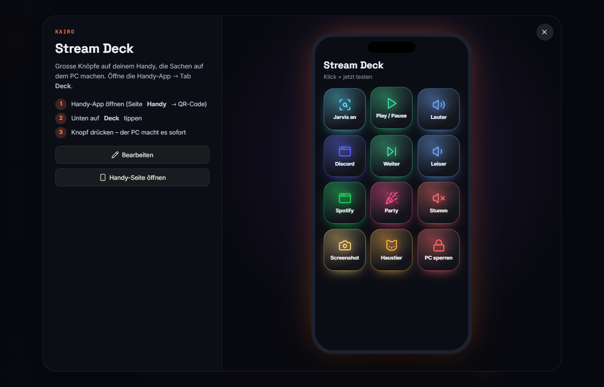

Rede einfach mit Kairo. Es baut Apps und Websites, recherchiert mit Quellen, hilft bei der Schule, fliegt über eine 3D-Erde und verwandelt deinen PC in ein Iron-Man-HUD.
Funktioniert mit Gemini (gratis), Claude, ChatGPT oder einer lokalen KI.
Einfach reden – Kairo antwortet sofort mit natürlicher Stimme und erledigt Sachen am PC.
Die ganze App und dein Desktop werden zum holografischen Iron-Man-HUD.
Skizze zeichnen oder beschreiben – Kairo baut eine echte, funktionierende App.
Liest viele Quellen und schreibt einen Bericht mit Zahlen und Quellenangaben.
Prüfungs-Simulator mit Note, Lernpfade, Sprachlehrer und Schreib-Coach.
Spiel beschreiben, 3D-Vorschau ansehen, mit einem Klick in Roblox Studio bauen.
Satellitenbilder, Flüge live, Regenradar, Weltreisen und Dokus.
Bewerbung, Lebenslauf und Präsentationen als PDF, Word und PowerPoint.
Grosse leuchtende Knöpfe auf dem Handy steuern deinen PC.
Dunkles, modernes Design mit vielen Animationen.






Keine Programmierkenntnisse nötig.
Auf „Kairo herunterladen“ klicken und die Datei Kairo-Setup.exe öffnen.
Dem Installer folgen. Kairo landet auf dem Desktop und im Startmenü und aktualisiert sich später selbst.
In Kairo unter Einstellungen → KI einen Gemini-Schlüssel einfügen – gratis auf aistudio.google.com/apikey.
Ja. Kairo selbst ist kostenlos. Mit einem Gemini-Schlüssel von Google kannst du die KI ebenfalls gratis nutzen (mit täglichem Limit).
Einstellungen, Schlüssel und Erinnerungen bleiben verschlüsselt auf deinem PC. Deine Fragen gehen nur an die KI, die du selbst auswählst.
Nein. Kairo läuft nur, solange das Fenster oder der kleine Orb offen ist.
Windows 10 oder 11 (64-Bit). Für die Sprachfunktionen ein Mikrofon.